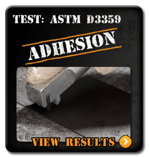
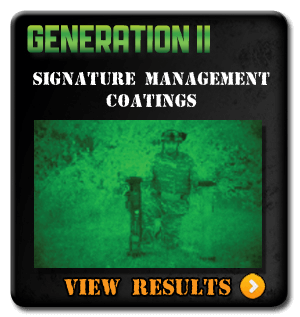

|
||
|  | ||
|  |
Cerakote Gun Coatings by Acoating.com Master Certified Cerakote applicator.
Protecting against scratching and stopping rust before it starts is the goal of any finish. The beauty of using either Cerakote or DuraCoat is that they offer a myriad of color combinations and are specialized finishes designed for Firearm refinishing or other sporting equipment. In addition to protecting your gear against scrapes, scratches, bangs and bruises, they also protect your gear from the elements as well as stopping rust before it starts. These finishes are far superior to traditional finishes like bluing, Parkerizing and looks are everything when it comes to your project! We offer two distinctly different types of finishes, CeraKote and DuraCoat. Each of these finishes have specific uses and both can be used on the same project in many circumstances.
Acoating services are available for most rifles, handguns shotguns, optics mounts and many types of firearm and other accessories and, can be applied to a wide range of items and substrates including:
• All metals, including: titanium, aluminum, magnesium, copper, brass, stainless steel, etc...
• Most plastics and polymers used in firearms frames and items such as Kydex holsters, etc
• Fiberglass and carbon-fiber stocks, grips and handguards
• Scopes and optics (exterior only – ambient cure C-Series)
• Scope and optics mounts and other high-quality accessories.
Coatings are available in single color, two-color and multi-color and can be applied in basic to complex camouflage patterns as well as custom airbrush designs.
CeraKote Gun Coatings
Cerakote has a unique ceramic structure that out-performs any competitive coating and improves performance in both laboratory and real world settings. The unique formulation used for Cerakote Firearm Coatings enhances a number of physical performance properties. Each of these properties is rigorously tested to guarantee that Cerakote products remain at the forefront of the firearm Refinishing/Coating market. To prove Cerakote is the leading firearm coating, NIC (the manufacturer of CeraKote) hired an independent military testing facility to perform a blind side by side comparison between Cerakote, KG Gun-Kote, and DuraCoat. In every test Cerakote out performed the other products. All tests were performed in accordance to the ASTM standards listed Click Here To See The Test Results
CERAKOTE Chemical Resistance WD-40, Motor Oil, Gun Cleaner, Lacquer Thinner, Mineral Spirits, Methyl Ethyl Ketone, Gasoline, Diesel, Graffiti Remover, Brake Cleaner, Denatured Alcohol, Paint Stripper, 5% HCl Solution, Acetone, Ammonia, Brake cleaner, Carb Cleaner,
Cerakote DFAC (Dry Film Anti-Carbon) Treatment for internal parts (ex.Bolts etc)
Is a dry film ceramic coating with special properties and attributes specially suited to tight tolerance applications and high-wear internal parts, such as bolts, bolt carriers, barrels and 1911 barrel bushings, etc… Cerakote DFAC penetrates the metal substrate and therefore adds minimal (.25 to .50 mil) thickness. In addition when applied to certain internal firearms parts, helps to reduce carbon fouling by resisting carbon adhesion, which promotes reduced maintenance, easier cleaning and improved operational reliability. DFAC imparts a medium grey to dark grey/black color to most steel substrates. Its primary purpose is one of functionality rather than aesthetics as the parts will “burnish” over time changing the original coated appearance of the parts while maintaining the anti-friction and anti-carbon attributes of the coating.
DuraCoat vs Cerakote
DuraCoat is a two-part chemical coating developed specifically for firearms and other outdoor gear. It is a durable, reliable, and attractive finish. Since the DuraCoat application process does not require high curing temperatures many items including scopes, binoculars, stocks, and just about anything else can be coated. Unlike standard finishes such as bluing, DuraCoat provides an unprecedented level of protection from moisture, saltwater, handling and other activities that normally causes wear and corrosion on traditional finishes. DuraCoat offers some bright and flourscent colors, so if you're looking for that truly one of a kind look it may be exactly what you need.
RUST RESISTANCE: Cerakote finishes have been tested in salt spray and full emersion and have withstood beyond 3,000 hours in salt spray and hundreds of hours in full emersion testing. These results outperform other finishes by over 10x. This makes Cerakote finishes the clear choice for marine environments and other environments subject to high humidity and salt water environments.
WEAR RESISTANCE: Cerakote finishes can withstand over 5,000 (5,212) wear cycles per mil (.0001). The Tabor wear test uses an 8" abrasive wheel applied to a metal plate coated with 1 mil thickness of the Cerakote coating. In addition, Cerakote's Coefficient of Friction is 80% less than stainless steel against stainless steel. So, when one or both moving parts of a firearm are coated you can expect a significantly longer product duty cycle or service life.
ADHESION: Cerakote finishes have an ASTM D3359 rating of 5B and can withstand a 180° mandrel bend rotation test around a 1/4" mandrel and a ball bearing impact test of 160 inch-lbs with no cracking or loss of adhesion. This is significant performance given Cerakote’s 9H pencil hardness, which is the highest hardness rating in the scale. HARDNESS AND SCRATCH RESISTANCE: ASTM D3363 is a 9H pencil hardness and 6H scratch resistance.
FILM THICKNESS: 1.0 mil (Cerakote DFAC “Dry Film Anti-Carbon” is .25 to .50 mil)
| Abrasion Resistance (Taber Abrasion ) Testing performed by an independent testing facility proved that Cerakote is 7 1/2 times more wear resistant |
| Cerakote | |
| Failed At 8000 Wear Cycles | |
| DuraCoat | |
| Failed At 600 Wear Cycles | |
| Gun-Kote | |
| Failed At 500 Wear Cycles | |
|
Testing Done accouring to ASTM D460. Taber abrasion is an approved ASTM method which is used to determine the wear resistance of coatings by rotating an abrasive disk on the surface of a coated substrate.
|
|
| Flexibility and Durability | ||
| Cerakote can undergo a 32% elongation without distortion or seperation of the coating from the substrate. | Cerakote can withstand 160 PSI (pounds per sq inch) of impact with no coating loss from the impact. | |
| Tested According To ASTM D522 | ||